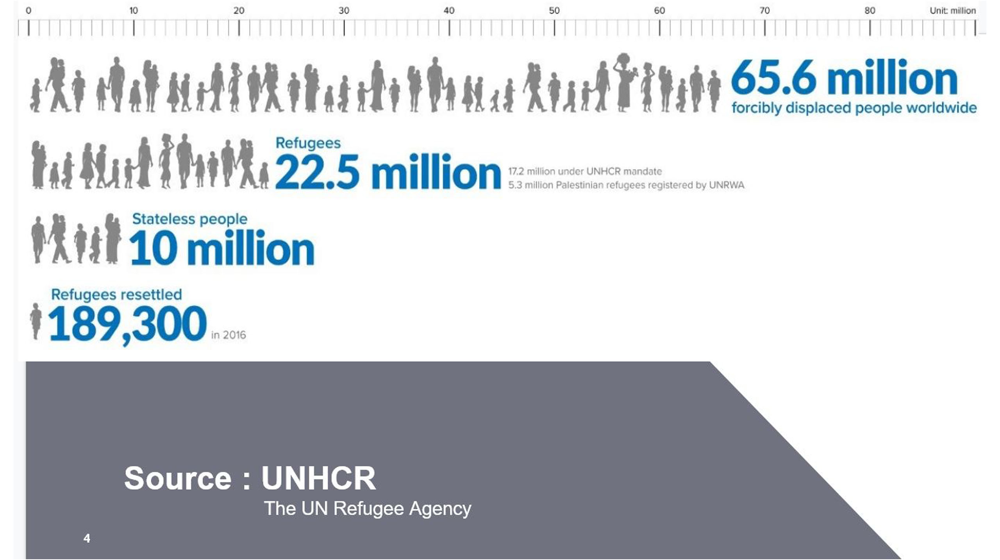
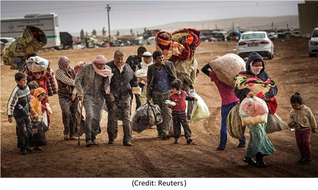
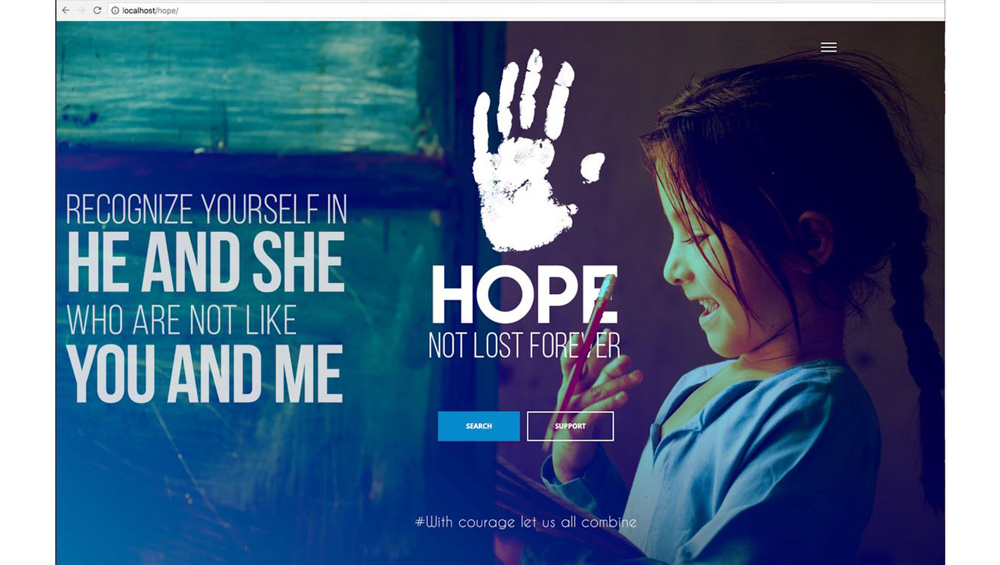

The usage of 2-D maps can be quite cumbersome in terms of the user not fully understanding
his/her relative position in terms of the POI. It can lead to mishaps and time wastage. It also
doesn’t give a full textural view of the environment and satellite images may or may not be
trustworthy.
It is not as interactive as a person guiding you by hand to a location. It can leave room for
human error and also not be quite clear to someone who is technologically challenged.
Moreover a basic knowledge of GPS tracking, location enabling and GPS points will be
required in the case of 2D mapping.


Concept
Eyesistance is an easy to use, easy to install and blindingly precise application that can be
widely used. An Augmented Reality Navigation application capable of displaying locations
near to the user’s device and displaying relevant information about the points of interest. The POI’s are fetched from an underlying API
that is reliable and correct. It
works with or without internet connection depending on the map API used by the user. It is an IOS application that requires no other specifics other than installation and location
service enabling.
2.2.1 Advantages of Proposed System
1. Ease of access-Requires no login, just installation on device and location
enabling
2. Efficiency- All points of Interest will be displayed accurately.
3. Interactive Usage- The user gets an experience of a hands on guide.
Services
Search people using face recognition. Add people using a simple phone capture. Alert relatives if a match is found. Entry of information (both data and facial image) into a centralized database accessible to all refugee camps and people.
Anyone can contribute images to this database, So finding people made easy by an single image. Search for individuals using their name or picture.
Get details of the individual ( camp, location etc.). Donation to the particular camp. Feature for nearby people who can notify nearby camps if they are willing to temporarily house refugees, If there occurs an event where the camp capacity is exceeded. To donate in monetary fashion. Or in the form of items required in the camps.

Result
The proposed system includes entry of information (both data and facial image) into a centralized database accessible to all refugee camps, and enables users to search for individuals using their name or picture, implementing facial recognition.
Also provided is a feature for nearby people who can notify nearby camps if they are willing to temporarily house refugees if there occurs an event where the camp capacity is exceeded.
Since different countries have different laws regarding the admission of refugees, we also make it possible to display the related rules according to the country from which the site is accessed.
It is also possible for kind hearted philanthropists to donate in monetary fashion, or in the form of items required in the camps.